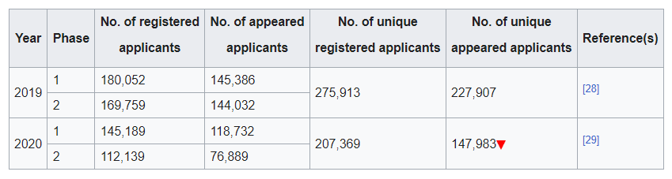

Joint Entrance Examination – Main (JEE-Main), formerly All India Engineering Entrance Examination (AIEEE), is an Indian standardised computer-based test for admission to various technical undergraduate programs in engineering, architecture, and planning across colleges in India. The exam is conducted by the National Testing Agency for admission to B.Tech, B.Arch, etc. programs in premier technical institutes such as the National Institutes of Technology (NIT) and Indian Institutes of Information Technology (IIIT), which are based on the rank secured in the JEE-Main. It is usually conducted twice every year. Since mid of 2019, the JEE has been conducted fully online as a computerised test.
The AIEEE was introduced in 2002, since the newly established NIT and IIIT universities wanted an entrance examination paper of a higher standard than the Common Engineering Test (CET), which was formerly used for admission to all non-IIT engineering universities, including even RECs and IIITs, owing mostly to the rising competition and the goal of maintaining the exclusiveness of such institutes of national importance. It was renamed to JEE-Main in 2013.
Until 2018, the exam was held both in pen and paper and CBT modes, as well as was held in the first week of April by the Central Board of Secondary Education (CBSE). It is conducted by National Testing Agency in CBT mode only from 2018 onwards.
The 2020 and 2021 exams were postponed and conducted later in the same years, due to the coronavirus pandemic. 2021 was the only year throughout JEE-Main history, when a maximum of 4 attempts were given to students. In general, for the rest of the years, most students took the JEE-Main exam in either 1 or 2 attempts, even though a maximum of 3 attempts is allowed during two consecutive years.
The examination consists of only two papers: Paper 1 for B.E./B.Tech courses and Paper 2 for B.Arch and B.Planning courses. A candidate can opt for any or both the papers. Paper 1 is mandatorily a computer based test (called online mode) from 2018 onwards. Until 2018, there was an option between offline pen and paper mode and online computer mode. The examination was conducted only in offline pen and paper mode till 2010. In 2011, as per the orders of the Ministry of Human Resource Development, CBSE conducted Paper 1 in Computer Based Test (CBT) mode for the first one lakh candidates who opted for the same, while the remaining students took the examination in the conventional pen and paper mode. The number of attempts which a candidate can avail at the examination is limited to three in consecutive years. As of 2018, the top 2,24,000 rankers of JEE-Main will qualify to take the second and final level of examination: JEE-Advanced.
In 2010, the Ministry of Human Resource Development announced plans to replace JEE with a common entrance test for all government engineering colleges which will be called Indian Science Engineering Eligibility Test (ISEET), by 2013. Accordingly, MHRD proposes to set up National Testing Service, which will be an autonomous and self-sustained agency to conduct this new common entrance test.
The JEE-Main also serves as a preliminary requisite examination for JEE-Advanced.
The exam is offered in thirteen languages, namely English, Assamese, Bengali, Gujarati, Hindi, Kannada, Malayalam, Marathi, Odia, Punjabi, Tamil, Telugu, and Urdu.
Institutes participating in the 2022 centralized seat allocation process included:
The number of applicants taking the JEE-Main has varied over the years, with a peak of over 1.35 million in 2014.
(From 2021)
(From 2021)
(Before 2021)
Earlier, counselling for the JEE-Main was conducted through the CSAB; but, now, the authorities have made changes in the counselling procedure. The JAB (Joint Admission Board), representing IITs, and the CSAB (Central Seat Allocation Board), making agreements on behalf of the NITs (National Institutes of Technology) and other CFTIs (Centrally Funded Technical Institutes), are now united to conduct counselling (common counselling) for the two exams of the IIT-JEE. The memo for the same was signed on May 2, 2015. These two together are known as the Joint Seat Allocation Authority (JoSAA).
In paper I, each subject will contain two sections. Section A will be of Multiple-Choice Questions (MCQs), and Section B will contain questions whose answers will be filled in as a numerical value. In Section B, candidates must attempt five questions out of 10. There will be a negative marking for Section B as well.
In paper 2A, 20 questions will be MCQs, and 5 questions will have answers to be filled in as a numerical value out of 10. There will be a negative marking for numerical value.
20 questions will be MCQs, and 5 questions will have answers to be filled in as a numerical value out of 10. There will be a negative marking for numerical value.
➤ On a side note, it is also very important for candidates to carefully read all the instructions that are given in the question paper. Understand it clearly and then move on to solving the questions. It is important to follow the right procedure for the exams because gaining a negative marking or losing points may cost candidates a higher rank in the exams.
From 2021 onwards, as per the National Education Policy (NEP), JEE Main paper will be set in 13 languages. They are as follows:
Candidates have to note the option of choosing a language for the question paper should be exercised while filling out the application form online. NTA has mentioned that it cannot be changed at a later stage. Additionally, for the correctness of the questions in all the JEE Main question papers, the English version will be taken as the final.